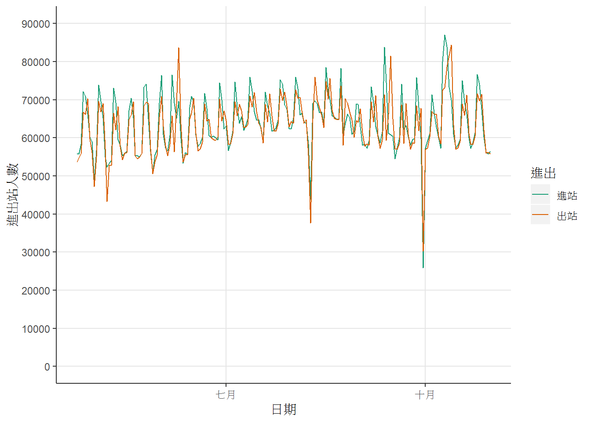
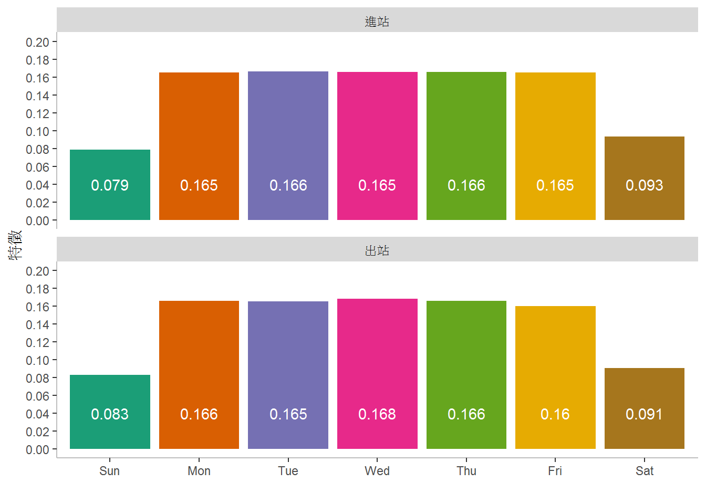
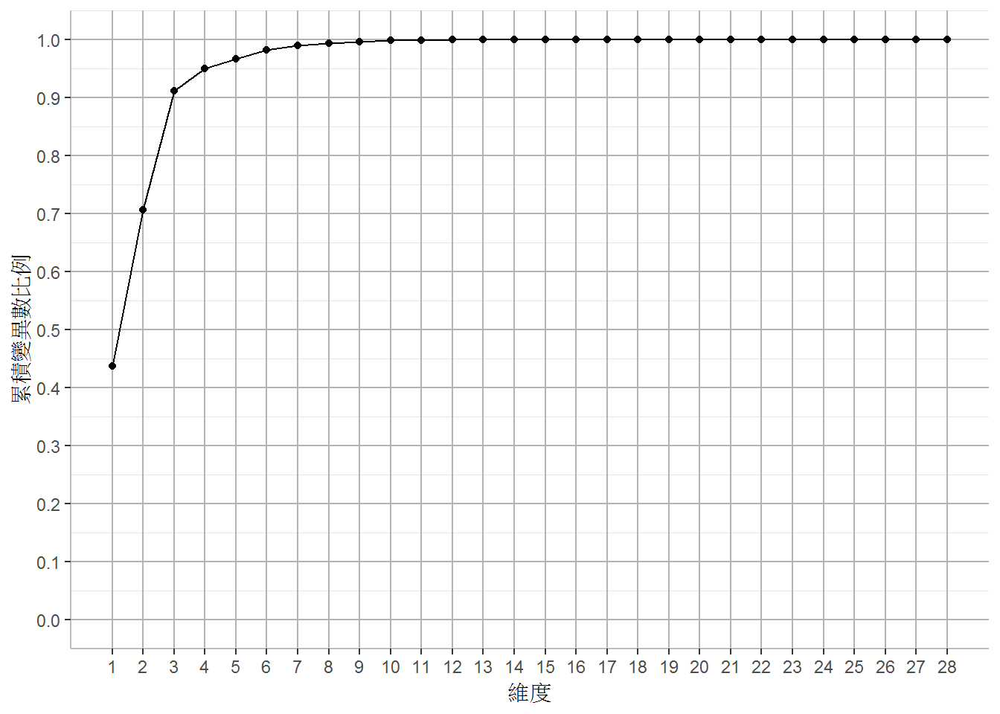
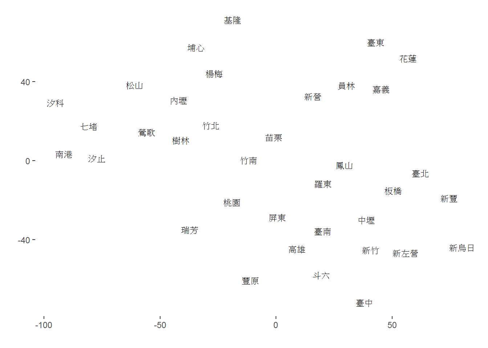

Chapter 7 利用R語言進行非監督式機器學習
課程簡介
課程簡介
集群是根據資料之間的相似性(或者距離)，找出一種將資料劃分成若干群的方式。本次課程的目的為介紹非監督式機器學習中的集群分析，並且利用臺鐵提供的各站點進出站人數統計資料，從統計資訊抽取特徵，做為主要車站的特徵，進行集群分析的練習。本次課程包含以下的內容：
- 集群分析簡介
- 集群分析AP (Affinity Propagation)演算法的應用
學習目標
- 能夠說明集群分析的概念，並選擇適用的問題
- 能夠應用AP演算法的套件apcluster進行集群分析
7.1 集群分析
如[資料探勘在傳播學的應用案例]所言，集群分析一種非監督式機器學習的資料探勘方法。其概念是根據資料的特性，設法找到一個可以良好地突顯資料的特徵間彼此相似性與相異性的方式。換言之，集群分析的結果是根據輸入資料特徵之間彼此的相似性，自動找到一種劃分方法使得特徵相似性較高的資料會被劃分在同一群組內，不在同一群組內的資料特徵之間相似性則比較低。

集群分析的演算法非常多，如
- K-means
- EM (expectation-maximization)
- AHC (agglomerative hierarchical clustering, 聚合式階層集群)
- DBSCAN
- AP (affinity propagation)
本章將利用AP演算法，對台鐵各站點，依照進出站人數統計資料的相似性，進行集群分析。
AP演算法可參考 Bodenhofer, U., Kothmeier, A., & Hochreiter, S. (2011). APCluster: an R package for affinity propagation clustering. Bioinformatics, 27(17), 2463-2464.
7.2 以進出站人數統計資料對臺鐵主要車站進行集群分析
在政府開放資料平台上，臺鐵提供了每日各站點進出人數。
我們推測不同車站的定位事實上可能可以從它的進出人數上反應出來。例如某一個車站它的平常上班日比起週末假日有較多的進出人數，這個車站可能是提供給附近上班族通勤之用。如果在週末假日有較多的進出人數，而且週五、週六的出站人數比進站人數多，這個車站的旅客可能主要為返鄉遊子或旅行的遊客。在本章中，我們將利用臺鐵主要車站週一到週日每天進出人數的比例做為各車站的特徵，進行集群分析，將具有相似特徵的車站，聚集起來，分析與討論各車站的定位。
在本章的應用中，我們可以根據KDD過程中的各個步驟進行集群分析，個步驟為：
- 選取資料 (Selection)
- 資料的清除與整理等前處理 (Preprocessing)
- 轉換資料為有效描述和預測的特徵 (Transformation)
- 運用機器學習(machine learning)的技術建立資料模型 (狹義的資料探勘) (Data Mining)
- 解釋、評估與應用 (Intepretation/Evaluation)
7.2.1 載入相關套件
首先載入輸入與處理資料的相關套件，因為臺鐵的資料多為JSON型式，所以載入JSON處理相關套件jsonlite。
library(tidyverse)
library(lubridate)
library(jsonlite)7.2.2 選取資料
讀取臺鐵的每日各站點進出人數資料。
df <- fromJSON("https://ods.railway.gov.tw/tra-ods-web/ods/download/dataResource/8ae4cabf6973990e0169947ed32454b9")
查看資料型態
summary(df)## trnOpDate staCode gateInComingCnt
## Length:45630 Length:45630 Length:45630
## Class :character Class :character Class :character
## Mode :character Mode :character Mode :character
## gateOutGoingCnt
## Length:45630
## Class :character
## Mode :character- trnOpDate： 營運日期
- staCode： 車站代碼
- gateInComingCnt： 進站人數
- gateOutGoingCnt： 出站人數
將trnOpDate改變為日期資料型態，gateInComingCnt和gateOutGoingCnt則分別改為numeric資料型態。
df <- df %>%
mutate(trnOpDate=ymd(trnOpDate)) %>%
mutate(gateInComingCnt=as.numeric(gateInComingCnt)) %>%
mutate(gateOutGoingCnt=as.numeric(gateOutGoingCnt))## Warning: The `printer` argument is deprecated as of rlang 0.3.0.
## This warning is displayed once per session.再查看一次資料型態
summary(df)## trnOpDate staCode gateInComingCnt gateOutGoingCnt
## Min. :2019-04-23 Length:45630 Min. : 0 Min. : 0
## 1st Qu.:2019-06-09 Class :character 1st Qu.: 146 1st Qu.: 155
## Median :2019-07-27 Mode :character Median : 660 Median : 663
## Mean :2019-07-27 Mean : 2729 Mean : 2729
## 3rd Qu.:2019-09-14 3rd Qu.: 2161 3rd Qu.: 2139
## Max. :2019-10-31 Max. :87020 Max. :84345因為出入站資料僅有包含車站代碼，所以從另外一個開放資料車站基本資料集，讀取站點編號對應的名稱資料。
site.df <- fromJSON("http://ods.railway.gov.tw/tra-ods-web/ods/download/dataResource/0518b833e8964d53bfea3f7691aea0ee")
將進出站點資料加入站點名稱。
df <- df %>%
left_join(select(site.df, staCode=stationCode, staName=stationName))
是否有站點資料缺少站點名稱？
df[is.na(df$staName),]刪除沒有站點名稱的資料
df <- df %>%
filter(!is.na(staName))7.2.3 資料的清除與整理等前處理
首先查看資料的樣貌，並且修改可能的錯誤。
以臺北站為例，畫出每天的進出站人數情形
df %>%
filter(staName=="臺北") %>%
gather(key=IO, value=Count, -staName, -staCode, -trnOpDate) %>%
ggplot() +
geom_line(aes(x=trnOpDate, y=Count, color=IO)) +
scale_y_continuous(limits=c(0, 90000), breaks=seq(0, 90000, 10000)) +
scale_color_brewer(palette="Dark2", labels=c("進站", "出站")) +
labs(x="日期", y="進出站人數", color="進出") +
theme(panel.background = element_blank(),
axis.line = element_line(color="grey20"),
panel.grid.major = element_line(color="grey90"))
討論
- 資料分布的範圍？
- 資料分布的樣式？
- 是否有異常值(outliers)？
7.2.4 產生站點資料特徵
站點資料特徵便是用來一組描述站點特性的資料。
首先計算每個站點每天平均進出站人數，以便接下來找出主要的車站
df %>%
group_by(staName) %>%
summarise(In=mean(gateInComingCnt, trim=0.05), Out=mean(gateOutGoingCnt, trim=0.05)) %>%
ungroup() %>%
arrange(desc(In))## # A tibble: 237 x 3
## staName In Out
## <chr> <dbl> <dbl>
## 1 臺北 63837. 63379.
## 2 桃園 27945. 28856.
## 3 中壢 26737. 26921.
## 4 臺南 26148. 26475.
## 5 臺中 25759. 24942.
## 6 板橋 21334. 21467.
## 7 新竹 20182. 20387.
## 8 高雄 16869. 16903.
## 9 松山 16836. 16665.
## 10 花蓮 16511. 15660.
## # ... with 227 more rows選取主要車站(每天平均進入人數達5000人以上)
cand_sta <- df %>%
group_by(staName) %>%
summarise(In=mean(gateInComingCnt, trim=0.05), Out=mean(gateOutGoingCnt, trim=0.05)) %>%
ungroup() %>%
filter(In>=5000) %>%
pull(staName)從原始資料中取出主要車站的資料
df1 <- df %>%
filter(staName %in% cand_sta)根據前面的折線圖，我們可以觀察到進出站人數具有週期性變化的情形，而其週期大約是一週(一星期)。所以可能可以以一週為單位，彙整每一天進出站人數資料(取平均)，同時也注意避免雜訊(某一天突然增加或減少的異常值)。
df1 <- df1 %>%
mutate(trnOpDateW=wday(trnOpDate, label=TRUE, locale="English")) %>%
group_by(staName, trnOpDateW) %>%
summarise(In=mean(gateInComingCnt, trim=0.05), Out=mean(gateOutGoingCnt, trim=0.05)) # 捨棄前後0.05最大與最小的資料檢視汐科站在一週每天的進出人數分布範圍。
df1 %>%
filter(staName=="汐科") %>%
gather(key="Var", value="Count", -staName, -trnOpDateW) %>%
ggplot() +
geom_col(aes(x=trnOpDateW, y=Count, fill=Var)) +
scale_fill_brewer(palette="Dark2", labels=c("進站", "出站")) +
scale_y_continuous(limits=c(0, 15000), breaks=seq(0, 15000, 3000)) +
facet_wrap(~Var, nrow=2, labeller = labeller(Var =
c("In" = "進站", "Out" = "出站"))) +
labs(x="", y="平均進出站人數") +
theme(panel.background = element_blank(),
axis.line = element_line(color="grey"),
legend.position="none")
以利用相同方式檢視臺東站和臺北站在一週每天的進出人數分布範圍。(臺北站由同學練習)
df1 %>%
filter(staName=="臺東") %>%
gather(key="Var", value="Count", -staName, -trnOpDateW) %>%
ggplot() +
geom_col(aes(x=trnOpDateW, y=Count, fill=Var)) +
scale_fill_brewer(palette="Dark2", labels=c("進站", "出站")) +
scale_y_continuous(limits=c(0, 15000), breaks=seq(0, 15000, 3000)) +
facet_wrap(~Var, nrow=2, labeller = labeller(Var =
c("In" = "進站", "Out" = "出站"))) +
labs(x="", y="平均進出站人數") +
theme(panel.background = element_blank(),
axis.line = element_line(color="grey"),
legend.position="none")
注意週日和週五、週六與平日的情形，汐科站平日進出站人數多於週日和週六；臺北和臺東的週末進出人數都多於週間平日。
針對上述的現象，我們決定以第一組特徵表現平日進出站人數與週六、日的不同。
以圖表示
df1 %>%
filter(staName=="汐科") %>%
gather(key="Var", value="Count", -staName, -trnOpDateW) %>%
group_by(Var) %>%
mutate(Count=Count/sum(Count)) %>%
ggplot() +
geom_col(aes(x=trnOpDateW, y=Count, fill=trnOpDateW, group=trnOpDateW)) +
geom_text(aes(x=trnOpDateW, label=round(Count, 3)), y=0.04, colour="white") +
scale_fill_brewer(palette="Dark2") +
scale_y_continuous(limits=c(0, 0.2), breaks=seq(0, 0.2, 0.02)) +
facet_wrap(~Var, nrow=2, labeller = labeller(Var =
c("In" = "進站", "Out" = "出站"))) +
labs(x="", y="特徵") +
theme(panel.background = element_blank(),
axis.line = element_line(color="grey"),
legend.position="none")
同學可自行練習臺北和臺東的情形。
產生所有車站第一組特徵的程式碼如下：
sta_inf1 <- df1 %>%
gather(key=Var, value=Value, -staName, -trnOpDateW) %>%
group_by(staName, Var) %>%
mutate(Value=Value/sum(Value)) %>%
ungroup() %>%
unite(temp, trnOpDateW, Var) %>%
mutate(temp=paste0(temp,"_w")) %>%
spread(key=temp, value=Value) %>%
mutate_if(is.numeric, scale)另外，週五、週六和週日的情形，臺東站的週日進站多於出站，週五和週六則相反；臺北站的週五和週六則是進站多於出站。
df1 %>%
filter(staName=="臺東") %>%
gather(key="Var", value="Count", -staName, -trnOpDateW) %>%
ggplot() +
geom_col(aes(x=Var, y=Count, fill=Var)) +
scale_fill_brewer(palette="Dark2", labels=c("進站", "出站")) +
scale_y_continuous(limits=c(0, 15000), breaks=seq(0, 15000, 3000)) +
scale_x_discrete(labels = c("In"="進站", "Out"="出站")) +
facet_wrap(~trnOpDateW, nrow=2) +
labs(x="", y="平均進出站人數") +
theme(panel.background = element_blank(),
axis.line = element_line(color="grey"),
legend.position="none")
因此，以第二組特徵表現每日進出站人數的不同。以圖表示
df1 %>%
filter(staName=="臺東") %>%
gather(key="Var", value="Count", -staName, -trnOpDateW) %>%
group_by(trnOpDateW) %>%
mutate(Count=Count/sum(Count)) %>%
ggplot() +
geom_col(aes(x=Var, y=Count, fill=Var)) +
geom_text(aes(x=Var, label=round(Count, 2)), y=0.2, colour="white") +
scale_fill_brewer(palette="Dark2") +
scale_y_continuous(limits=c(0, 0.6), breaks=seq(0, 0.6, 0.05)) +
scale_x_discrete(labels = c("In"="進站", "Out"="出站")) +
facet_wrap(~trnOpDateW, nrow=2) +
labs(x="", y="特徵") +
theme(panel.background = element_blank(),
axis.line = element_line(color="grey"))
同學可自行練習臺北的情形。
產生所有車站第二組特徵的程式碼如下
sta_inf2 <- df1 %>%
gather(key=Var, value=Value, -staName, -trnOpDateW) %>%
group_by(staName, trnOpDateW) %>%
mutate(Value=Value/sum(Value)) %>%
ungroup() %>%
unite(temp, trnOpDateW, Var) %>%
mutate(temp=paste0(temp,"_io")) %>%
spread(key=temp, value=Value) %>%
mutate_if(is.numeric, scale)將兩組特徵合併
sta_inf <- inner_join(sta_inf1, sta_inf2)## Joining, by = "staName"檢視產生的資料
summary(sta_inf)## staName Fri_In_w.V1 Fri_Out_w.V1
## Length:36 Min. :-1.137213 Min. :-1.7665676
## Class :character 1st Qu.:-0.580205 1st Qu.:-0.7275865
## Mode :character Median :-0.164465 Median :-0.2231931
## Mean : 0.000000 Mean : 0.0000000
## 3rd Qu.: 0.184957 3rd Qu.: 0.6557545
## Max. : 4.270252 Max. : 2.8881044
## Mon_In_w.V1 Mon_Out_w.V1 Sat_In_w.V1
## Min. :-2.7393237 Min. :-2.1078345 Min. :-3.177105
## 1st Qu.:-0.5942250 1st Qu.:-0.6986018 1st Qu.:-0.596975
## Median :-0.1207007 Median :-0.0420396 Median : 0.091662
## Mean : 0.0000000 Mean : 0.0000000 Mean : 0.000000
## 3rd Qu.: 0.5517940 3rd Qu.: 0.4934391 3rd Qu.: 0.661233
## Max. : 2.8617230 Max. : 2.9480380 Max. : 1.902363
## Sat_Out_w.V1 Sun_In_w.V1 Sun_Out_w.V1
## Min. :-3.175321 Min. :-2.5122130 Min. :-2.5341407
## 1st Qu.:-0.565203 1st Qu.:-0.5883317 1st Qu.:-0.5509623
## Median : 0.156139 Median : 0.0837399 Median : 0.0373610
## Mean : 0.000000 Mean : 0.0000000 Mean : 0.0000000
## 3rd Qu.: 0.758674 3rd Qu.: 0.5736051 3rd Qu.: 0.6947417
## Max. : 1.921921 Max. : 1.9511888 Max. : 2.2275010
## Thu_In_w.V1 Thu_Out_w.V1 Tue_In_w.V1
## Min. :-1.5897829 Min. :-1.9779224 Min. :-1.9342333
## 1st Qu.:-0.6330854 1st Qu.:-0.6257070 1st Qu.:-0.7252968
## Median :-0.0403080 Median :-0.1589686 Median : 0.0515242
## Mean : 0.0000000 Mean : 0.0000000 Mean : 0.0000000
## 3rd Qu.: 0.6166313 3rd Qu.: 0.5466750 3rd Qu.: 0.6496316
## Max. : 2.9059590 Max. : 2.8735917 Max. : 2.6076879
## Tue_Out_w.V1 Wed_In_w.V1 Wed_Out_w.V1
## Min. :-1.6414762 Min. :-1.9359738 Min. :-1.7333652
## 1st Qu.:-0.6936470 1st Qu.:-0.6788329 1st Qu.:-0.6510228
## Median : 0.0105515 Median : 0.0013033 Median : 0.0330708
## Mean : 0.0000000 Mean : 0.0000000 Mean : 0.0000000
## 3rd Qu.: 0.5675877 3rd Qu.: 0.6481420 3rd Qu.: 0.6535733
## Max. : 2.5503179 Max. : 2.4679686 Max. : 2.6424812
## Fri_In_io.V1 Fri_Out_io.V1 Mon_In_io.V1
## Min. :-1.756365 Min. :-3.607467 Min. :-2.2803369
## 1st Qu.:-0.485103 1st Qu.:-0.449949 1st Qu.:-0.5419042
## Median : 0.039681 Median :-0.039681 Median :-0.0889000
## Mean : 0.000000 Mean : 0.000000 Mean : 0.0000000
## 3rd Qu.: 0.449949 3rd Qu.: 0.485103 3rd Qu.: 0.5515968
## Max. : 3.607467 Max. : 1.756365 Max. : 2.4422621
## Mon_Out_io.V1 Sat_In_io.V1 Sat_Out_io.V1
## Min. :-2.4422621 Min. :-2.5118534 Min. :-2.6117308
## 1st Qu.:-0.5515968 1st Qu.:-0.5824306 1st Qu.:-0.5203343
## Median : 0.0889000 Median : 0.0932289 Median :-0.0932289
## Mean : 0.0000000 Mean : 0.0000000 Mean : 0.0000000
## 3rd Qu.: 0.5419042 3rd Qu.: 0.5203343 3rd Qu.: 0.5824306
## Max. : 2.2803369 Max. : 2.6117308 Max. : 2.5118534
## Sun_In_io.V1 Sun_Out_io.V1 Thu_In_io.V1
## Min. :-1.2878133 Min. :-2.3977813 Min. :-1.9926554
## 1st Qu.:-0.8182225 1st Qu.:-0.4822528 1st Qu.:-0.5486100
## Median :-0.2676783 Median : 0.2676783 Median :-0.0904832
## Mean : 0.0000000 Mean : 0.0000000 Mean : 0.0000000
## 3rd Qu.: 0.4822528 3rd Qu.: 0.8182225 3rd Qu.: 0.4468052
## Max. : 2.3977813 Max. : 1.2878133 Max. : 2.9487651
## Thu_Out_io.V1 Tue_In_io.V1 Tue_Out_io.V1
## Min. :-2.9487651 Min. :-2.346267 Min. :-3.463217
## 1st Qu.:-0.4468052 1st Qu.:-0.443204 1st Qu.:-0.446770
## Median : 0.0904832 Median :-0.218721 Median : 0.218721
## Mean : 0.0000000 Mean : 0.000000 Mean : 0.000000
## 3rd Qu.: 0.5486100 3rd Qu.: 0.446770 3rd Qu.: 0.443204
## Max. : 1.9926554 Max. : 3.463217 Max. : 2.346267
## Wed_In_io.V1 Wed_Out_io.V1
## Min. :-2.0989731 Min. :-2.8810202
## 1st Qu.:-0.4592394 1st Qu.:-0.3776252
## Median :-0.1743385 Median : 0.1743385
## Mean : 0.0000000 Mean : 0.0000000
## 3rd Qu.: 0.3776252 3rd Qu.: 0.4592394
## Max. : 2.8810202 Max. : 2.0989731取出各站點的特徵(第2到最後一個variable)，形成特徵矩陣，用來計算站點間的相似性，也就是估計矩陣的列(row)與列是否相似。
sta_inf.mat <- sta_inf %>%
select(2:ncol(.)) %>%
as.matrix()7.2.5 維度縮減
上面產生的特徵共有28個維度(dimensions)，也就是28個variables。在計算站點間的相似性之前，可以先看看是否可以用比較少的維度，便達到相近的計算結果。這個從高維度轉換成低維度的運算稱為維度縮減 (dimension reduction)，是資料探勘中相當重要的步驟。許多研究對於維度縮減提出相當多不同的方法，在此我們選用主成分分析 (principal component analysis, pca)。
將資料特徵輸入R語言的主成分分析函數prcomp()。
sta_inf.pca <- prcomp(sta_inf.mat)主成分分析產生的結果為一組與原先相同維度的矩陣，以上例而言，其結果在sta_inf.pca$x。經過主成分分析後，第一個維度的特徵(稱為PC1)是最重要的資料描述方式，其次是最二個維度的特徵(PC2)，依序下來為PC3、PC4、…。
查看主成分分析產生結果的解釋
summary(sta_inf.pca)## Importance of components:
## PC1 PC2 PC3 PC4 PC5 PC6 PC7
## Standard deviation 3.502 2.7433 2.3952 1.04166 0.67951 0.65438 0.45857
## Proportion of Variance 0.438 0.2688 0.2049 0.03875 0.01649 0.01529 0.00751
## Cumulative Proportion 0.438 0.7068 0.9117 0.95043 0.96692 0.98221 0.98972
## PC8 PC9 PC10 PC11 PC12 PC13
## Standard deviation 0.34455 0.27119 0.21747 0.17176 0.09662 0.08715
## Proportion of Variance 0.00424 0.00263 0.00169 0.00105 0.00033 0.00027
## Cumulative Proportion 0.99396 0.99659 0.99828 0.99933 0.99967 0.99994
## PC14 PC15 PC16 PC17 PC18 PC19
## Standard deviation 0.03476 0.01780 0.01189 0.007833 0.005235 0.003274
## Proportion of Variance 0.00004 0.00001 0.00001 0.000000 0.000000 0.000000
## Cumulative Proportion 0.99998 0.99999 1.00000 1.000000 1.000000 1.000000
## PC20 PC21 PC22 PC23 PC24
## Standard deviation 3.012e-15 2.943e-15 2.6e-15 2.228e-15 1.759e-15
## Proportion of Variance 0.000e+00 0.000e+00 0.0e+00 0.000e+00 0.000e+00
## Cumulative Proportion 1.000e+00 1.000e+00 1.0e+00 1.000e+00 1.000e+00
## PC25 PC26 PC27 PC28
## Standard deviation 1.326e-15 8.82e-16 5.688e-16 3.186e-16
## Proportion of Variance 0.000e+00 0.00e+00 0.000e+00 0.000e+00
## Cumulative Proportion 1.000e+00 1.00e+00 1.000e+00 1.000e+00其中的Standard deviation是只用這個維度上的特徵的標準差，可以利用標準差計算變異數所佔的比例(Proportion of Varience)，以第一個維度(PC1)來說，變異數所佔的比例約為0.44，也就是只用第一個維度的特徵便可以表現0.44的訊息，因此第一個維度是最重要的資料描述方式。第二個維度的變異數所佔的比例比第一個維度小，但比其他維度大，所以在資料描述方式上，它是第二重要的。以下依此類推。並且前四個維度(PC1、PC2、PC3和PC4)的變異數比例累積(Cumulative Proportion)約為0.96，也就是說只使用這四個維度便可以表現整個資料訊息的0.96。所以，以下的分析將使用前四個維度。
將各個維度的變異數比例累積畫成圖形來看。
data.frame(dim_order=seq(1, ncol(sta_inf.mat)),
var=sta_inf.pca$sdev^2) %>%
mutate(prop_varex=var/sum(var)) %>%
mutate(cum_prop_varex=cumsum(prop_varex)) %>%
ggplot(aes(x=dim_order, y=cum_prop_varex)) +
geom_line() +
geom_point() +
scale_x_continuous(limits=c(1, ncol(sta_inf.mat)), breaks=seq(1, ncol(sta_inf.mat), 1), minor_breaks = NULL) +
scale_y_continuous(limits=c(0, 1), breaks=seq(0, 1, 0.1)) +
labs(x="維度", y="累積變異數比例") +
theme(panel.background = element_blank(),
axis.line = element_line(color="gray"),
panel.grid.major = element_line(color="gray70"),
panel.grid.minor = element_line(color="gray90"))
取出經過前四個維度的資料。
sta_inf.pf <- sta_inf.pca$x[, 1:3]7.2.6 將站點依據彼此距離視覺化
本節中將依據站點彼此間的相似性，將各站點映射到圖形上，使相似性較大的站點在圖形上的距離較近
載入映射演算法套件
library(Rtsne)計算站點之間的距離(相似性可以視為距離的負值，相似性愈大，距離愈小)。dist()提供矩陣的每列之間各種距離的計算方式，這裡我們採用內定而且是最常用的Euclidean distance(歐基里得距離)。
sta_d <- dist(sta_inf.pf)依據站點特徵之間的歐基里得距離計算站點映射在圖形上的位置
tsne_out <- Rtsne(sta_d, perplexity=10, theta=0.0, is_distance=TRUE)tsne對每個資料產生它在圖形上的映射位置，其結果放在一個行數為2的矩陣Y上，每一列分別代表分別表示一個資料在圖形上的坐標。例如：前五個站點在圖形上的坐標為
tsne_out$Y[1:5,]## [,1] [,2]
## [1,] 81.93088 1.915601
## [2,] -19.05071 -24.292169
## [3,] 45.98614 20.639244
## [4,] -59.14341 -11.221718
## [5,] 85.98876 15.748300將每個站點加上它映射的坐標後，依據其坐標畫成圖形
sta_inf %>%
select(staName) %>%
mutate(x=tsne_out$Y[,1], y=tsne_out$Y[,2]) %>%
ggplot() +
geom_text(aes(x=x, y=y, label=staName), size=3) +
labs(x="", y="") +
theme(panel.background = element_blank())
7.2.7 站點集群
載入Affinity Propagation集群演算法套件
library(apcluster)AP集群演算法的輸入是資料項目間的相似性，所以我們利用前面計算得到的站點間的距離乘上-1，做為站點間的相似性。
s1 <- -1*as.matrix(sta_d)將站點間的相似性輸入AP集群演算法
res <- apcluster(s1, q=0.1)顯示集群分析的結果。Number of clusters是集群數量，Clusters是每個集群的成員，Exemplars是每個集群的核心成員。
show(res)##
## APResult object
##
## Number of samples = 36
## Number of iterations = 132
## Input preference = -10.88151
## Sum of similarities = -99.88029
## Sum of preferences = -43.52602
## Net similarity = -143.4063
## Number of clusters = 4
##
## Exemplars:
## 5 7 15 31
## Clusters:
## Cluster 1, exemplar 5:
## 1 5 6 12 26
## Cluster 2, exemplar 7:
## 3 7 8 9 10 14 16 19 24 25 29 33 36
## Cluster 3, exemplar 15:
## 11 15 23 27 30 34
## Cluster 4, exemplar 31:
## 2 4 13 17 18 20 21 22 28 31 32 35查看每個集群內的站點
for (i in seq(length(res@clusters))) {
print(paste("Cluster", i))
print(sta_inf1$staName[res@clusters[[i]]])
}## [1] "Cluster 1"
## [1] "七堵" "汐止" "汐科" "南港" "瑞芳"
## [1] "Cluster 2"
## [1] "內壢" "竹北" "竹南" "松山" "板橋" "苗栗" "埔心" "基隆" "新豐" "楊梅"
## [11] "臺北" "樹林" "鶯歌"
## [1] "Cluster 3"
## [1] "花蓮" "員林" "新營" "嘉義" "臺東" "豐原"
## [1] "Cluster 4"
## [1] "中壢" "斗六" "屏東" "桃園" "高雄" "新左營" "新竹"
## [8] "新烏日" "臺中" "臺南" "鳳山" "羅東"將站點映射到相對應的坐標上，並以顏色區分它們的集群。
sta_inf %>%
select(staName) %>%
mutate(x=tsne_out$Y[,1], y=tsne_out$Y[,2]) %>%
mutate(cl=factor(labels(res, type="enum"))) %>%
ggplot() +
geom_text(aes(x=x, y=y, label=staName, color=cl), size=3) +
scale_x_continuous(limits=c(min(tsne_out$Y[,1])-1, max(tsne_out$Y[,1])+1)) +
scale_y_continuous(limits=c(min(tsne_out$Y[,2])-1, max(tsne_out$Y[,2])+1)) +
scale_color_brewer(palette = "Dark2") +
labs(x="", y="") +
theme(panel.background = element_blank(),
legend.position = "none",
axis.line = element_line(color="grey"))
7.2.8 結果的解釋
各集群的核心成員
sta_inf$staName[res@exemplars]## [1] "汐止" "竹北" "員林" "臺南"比較核心成員的第一組特徵：平日進出站人數與週六、日的不同
sta_inf %>%
slice(res@exemplars) %>%
select(staName, ends_with("w")) %>%
gather(key=Var, value=value, -staName) %>%
mutate(trnOpDateW=substr(Var, 1, 3), IO=substr(Var, 5, nchar(Var)-2)) %>%
mutate(trnOpDateW=factor(trnOpDateW, levels=c("Mon", "Tue", "Wed", "Thu", "Fri", "Sat", "Sun"), ordered=TRUE)) %>%
ggplot() +
geom_col(aes(x=trnOpDateW, y=value, fill=IO), position="dodge") +
labs(x="", y="人數比例", fill="進出") +
scale_fill_brewer(palette="Dark2", labels=c("進站", "出站")) +
facet_wrap(~staName) +
theme(panel.background = element_blank(),
legend.position = "bottom")以下請分析各個集群表現的特色。建議：可以先從最右邊的集群開始分析。
小結
本節探討集群分析。集群分析的目的是將具有相似特徵的資料聚集成群，使得群組內的資料有比較相似的特徵，反之，群組外的資料其特徵較不相似。
為了達到上述目的，研究人員發展出許多集群分析演算法，例如：K-means、EM、AHC、DBSCAN和本次課程中使用的AP集群分析演算法。不同的集群分析演算法來自不同的集群構想，適合應用在不同的問題。
除了集群分析演算法，另外會影響集群分析的結果還包括資料的特徵以及資料之間的特徵相似性測量。為了達到較有意義而有效的集群結果，往往需要對資料進行仔細的觀察，找出適當的特徵表示以及相似性測量方法。
集群分析後，還需要評估結果的優劣。常見的評估方法包括：群組內資料差距的平均以及Silhouette Value。
延伸思考
什麼樣性質的問題適合應用集群分析？
除了AP外，還有許多集群分析演算法，如何在R語言中找到適合的套件，並且應用這些套件撰寫程式？